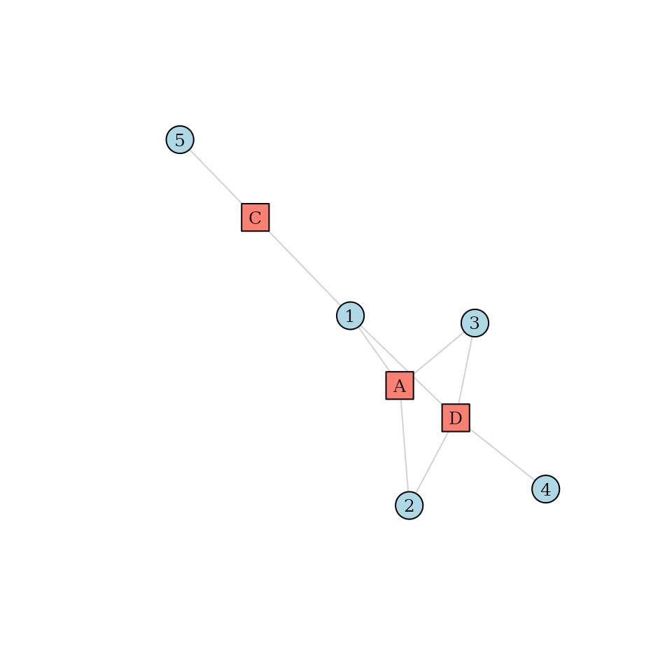
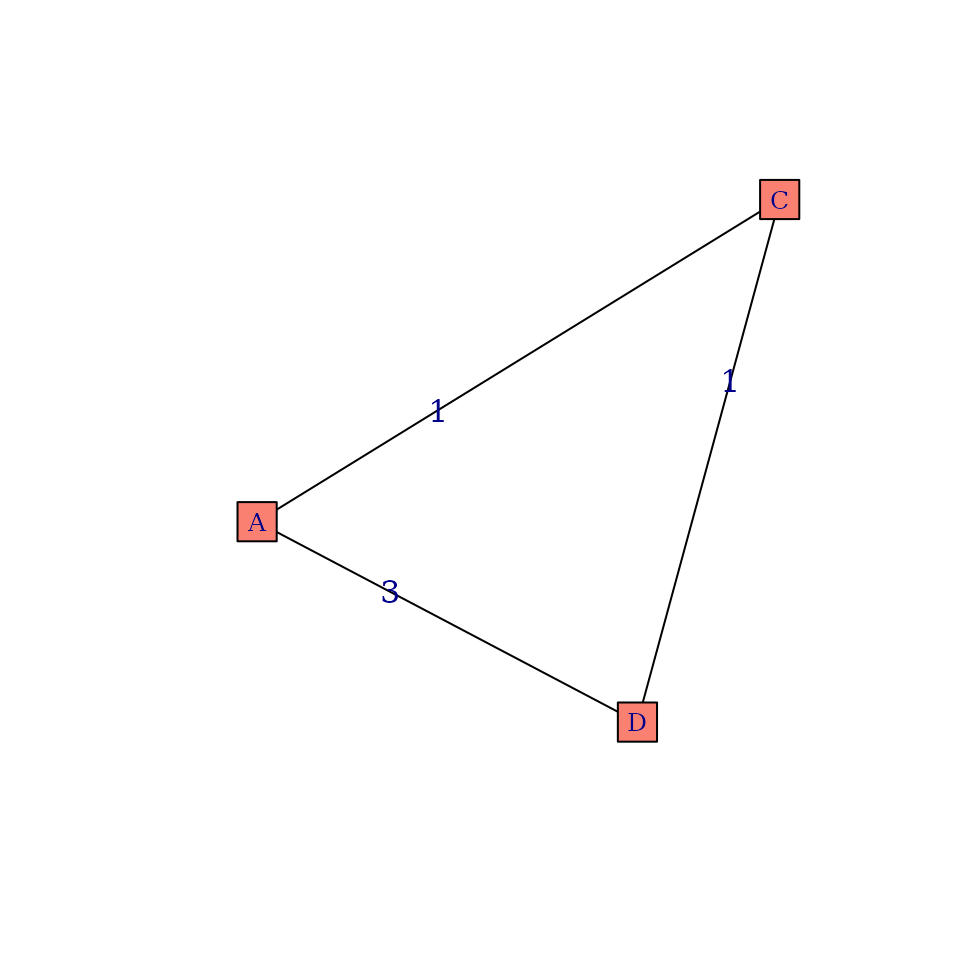

Calculating the Care Density and Fragmented Care Density in R
Robin Denz
Source:vignettes/introduction.Rmd
introduction.RmdIntroduction
CareDensity package is a small R package that can be
used mainly to calculate various measures of Care Density (Pollack et
al. 2013, Engels et al. 2024) and Coordination of Care Indices (Jee
& Cabana 2006). In this vignette we will show some simple examples
for each index and give some further explanations on what they mean.
Installation
This package is currently not available on CRAN, but a developmental version can be installed from github, using the following code:
devtools::install_github("RobinDenz1/CareDensity")Care Density
Explanation
The care density was first proposed by Pollack et al. (2013). It is a measure that is supposed to measure how closely the “care team” of a patient (the providers / medical doctors he is in contact with) are connected. As an indirect measure of how closely two providers work together, the number of patients shared by the providers is used. Therefore, in order to calculate the care density, the only information we need is which patient visited which provider. This information can be considered a “patient-sharing network” and has been used in multiple studies already (DuGoff et al. 2018, Landon et al. 2012).
Formally, the care density is defined as:
with being the number of providers a patient has visited, defined as the number of all possible combinations of length two and being the number of patients that a pair of provider is sharing.
Example
Suppose we have the following data about 5 patients (denoted by numbers) and the 3 providers they visited (denoted by uppercase letters):
library(CareDensity)
library(igraph)
library(data.table)
library(MatrixExtra)
set.seed(3431)
# some arbitrary patient-provider contact data
data <- data.frame(PatID=c("1", "1", "1", "2", "2", "3", "3", "4", "5"),
ArztID=c("A", "C", "D", "A", "D", "A", "D", "D", "C"))
data
#> PatID ArztID
#> 1 1 A
#> 2 1 C
#> 3 1 D
#> 4 2 A
#> 5 2 D
#> 6 3 A
#> 7 3 D
#> 8 4 D
#> 9 5 CSince there are only connections between patients and providers and
no connections between provider and providers or patients and patients,
this can be considered a bipartite graph. We can visualize this
graph using the igraph package:
# create graph
g <- graph_from_data_frame(data, directed=FALSE)
# add type
V(g)$type <- bipartite_mapping(g)$type
# change some things for better plots
V(g)$color <- ifelse(V(g)$type, "salmon", "lightblue")
V(g)$shape <- ifelse(V(g)$type, "square", "circle")
E(g)$color <- "lightgray"
plot(g, vertex.label.cex=0.8, vertex.label.color="black")
Consider patient number 1 in this graph. We can see that this patient visited 3 different providers (, and ). Therefore, is equal to 3 for this patient. But how about the weights? To gain a better understanding, we can project this graph into a provider-centric network, where only providers are included:
# project to provider mode
mat <- project_to_one_mode(g, mode="cols")
# make it an igraph object again
g_provider <- graph_from_adjacency_matrix(mat, mode="upper", weighted=TRUE, diag=FALSE)
# plot it
plot(g_provider, edge.label=E(g_provider)$weight, vertex.shape="square",
edge.color="black", vertex.color="salmon",
vertex.label.cex=0.8)
In this graph we can see exactly which provider shared how many patients. So for patient 1 the care density would be:
While this is easy to calculate for a single patient in a small
network, it is unfeasible to do this by hand in a large network and for
multiple patients. The care_density() function can be used
to automatically perform the step taken by hand above. All we need to do
is supply the original data to it:
care_density(data)
#> PatID sum_weights n care_density
#> 1 1 5 3 1.666667
#> 2 2 3 2 3.000000
#> 3 3 3 2 3.000000
#> 4 4 NA 1 NA
#> 5 5 NA 1 NAHere we can see that it gets the same result for patient 1 and also
outputs the care density for all other patients. Since patient 4 and 5
have only visited one provider, the care density is undefined for them
and is thus denoted by NA.
Fragmented Care Density
Explanation
The care density as defined by Pollack et al. (2014) has recently been criticed by Engels et al. (2024). Their main point are that:
- 1.) The care density assumes that all relationships with the same amount of patients shared contribute equally to care coordination. It therefore does not consider how many patients a single provider has.
- 2.) The kind of relationship is also not considered in the classic care density statistic. For example, relationships between psychiatrists and general providers may be more or less important than general provider - general provider relationships.
- 3.) The importance of specific relationships may vary for different outcomes and or different patient population, which is therefore also not considered in the classic care density measure or Pollack et al. (2024).
Engels et al. (2024) instead propose a modified version of the care density, which they call fragmented care density. The main idea is to stratify the sum term of the classic care density into multiple provider-relationship specific sums.
with being defined as:
where is the number of provider types. For example, if we have three different provider types (psychiatrist, general provider, other), we would have 6 different relationships. It is easy to see that this formulation is equivalent to the one given by Pollack et al. (2013). The new proposal is to weight the different connection types differently. The fragmented care density as proposed by Engels et al. (2024) is then given by:
where are some connection specific weights. Engels et al. (2024) propose to use regression models to estimate these weights. This is explained in a little more detail below.
Example
Consider again the example dataset defined above. Suppose, however,
that each provider is known to be either a general practitioner or a
psychiatrist. The following data.frame defines the type of
each provider in our example:
d_type <- data.frame(ID=c("A", "C", "D"),
Type=c("GP", "GP", "Psychiatrist"))
d_type
#> ID Type
#> 1 A GP
#> 2 C GP
#> 3 D PsychiatristSince there are two different kinds of providers, there are 3 possible provider connections:
- GP - GP
- GP - Psychiatrist
- Psychiatrist - Psychiatrist
We can safely omit the “Psychiatrist - GP” connection type, because
we are always dealing with undirected connections, which means that the
order of appearance does not make a difference. Now we can use the
fragmented_care_density() function as follows:
fragmented_care_density(data, weights=NULL, type=d_type, by_connection=TRUE)
#> PatID connection sum_weights n care_density
#> 1 1 GP - GP 1 3 0.3333333
#> 2 1 Psychiatrist - GP 4 3 1.3333333
#> 3 2 Psychiatrist - GP 3 2 3.0000000
#> 4 3 Psychiatrist - GP 3 2 3.0000000
#> 5 4 <NA> NA 1 NA
#> 6 5 <NA> NA 1 NABy setting by_connection to TRUE we are
telling the function to not directly calculate the fragmented care
density for us, but to instead return the sum of the weights and care
densities per connection type and patient. From this dataset we can see
that only patient 1 has two different kinds of provider connections
among his network. If we sum up the care densities of each patient over
all his connection types, we get the classic care density.
To calculate the actual fragmented care density for each patient, we
need to supply weights for each connection type. We can do
this by constructing a data.frame that looks like this:
d_weights <- data.frame(from=c("GP", "GP", "Psychiatrist"),
to=c("GP", "Psychiatrist", "Psychiatrist"),
weight=c(1, 1, 1))
d_weights
#> from to weight
#> 1 GP GP 1
#> 2 GP Psychiatrist 1
#> 3 Psychiatrist Psychiatrist 1Here, we set all weights to 1. Therefore, if we now call the
fragmented_care_density() function again (this time without
using the by_connection argument):
fragmented_care_density(data, weights=d_weights, type=d_type)
#> PatID fragmented_care_density
#> 1 1 1.666667
#> 2 2 3.000000
#> 3 3 3.000000
#> 4 4 NA
#> 5 5 NAwe get the same results as we did before when using the simple
care_density() function. However, if we use different
weights for each connection type:
d_weights <- data.frame(from=c("GP", "GP", "Psychiatrist"),
to=c("GP", "Psychiatrist", "Psychiatrist"),
weight=c(1.1, 0.5, 1.3))
d_weights
#> from to weight
#> 1 GP GP 1.1
#> 2 GP Psychiatrist 0.5
#> 3 Psychiatrist Psychiatrist 1.3and call the function again:
fragmented_care_density(data, weights=d_weights, type=d_type)
#> PatID fragmented_care_density
#> 1 1 1.033333
#> 2 2 1.500000
#> 3 3 1.500000
#> 4 4 NA
#> 5 5 NAwe obtain different results. Note that this never matters for
patients 4 and 5, because they only have one provider connection,
resulting in NA values no matter the weights.
Estimating Connection-Specific Weights
In the example above, we used arbitrary weights to showcase the
functionality of the fragmented_care_density() function. In
reality we would like to use sensible weights instead. Engels et
al. (2024) recommend using regression models to obtain the relevant
weights. In their article, they use a logistic regression model to
predict a binary outcome, given the presence of a connection type and
some covariates. We will illustrate this approach here without the use
of other covariates.
Suppose in addition to data (patient-provider
relationships) and type (the provider types) we also have
some patient level information on a binary outcome of interest
.
Suppose this is that data:
d_outcome <- data.frame(PatID=c("1", "2", "3", "4", "5"),
Y=c(0, 0, 1, 1, 0))
d_outcome
#> PatID Y
#> 1 1 0
#> 2 2 0
#> 3 3 1
#> 4 4 1
#> 5 5 0First, we again obtain data about the connection sums () per connection type:
d_consum <- fragmented_care_density(data, weights=NULL, type=d_type, by_connection=TRUE)We then binarize these weights to 0 / 1. If at least one connection is present, it is considered a 1, otherwise it is a 0:
d_consum$sum_weights <- fifelse(d_consum$sum_weights > 0, 1, 0)Next, we transform this information into the long-format using the
dcast() function of the data.table
package:
d_consum <- dcast(as.data.table(d_consum), PatID ~ connection,
value.var="sum_weights", fill=0)
d_consum$`NA` <- NULLAfterwards we can merge the outcome data to this dataset:
d_outcome <- merge(d_consum, d_outcome, by="PatID")Now we can finally fit the regression model, using the outcome as the dependent variable and the connection-type dummies as independent variables:
mod <- glm(Y ~ `GP - GP` + `Psychiatrist - GP`, data=d_outcome, family="binomial")
summary(mod)
#>
#> Call:
#> glm(formula = Y ~ `GP - GP` + `Psychiatrist - GP`, family = "binomial",
#> data = d_outcome)
#>
#> Coefficients:
#> Estimate Std. Error z value Pr(>|z|)
#> (Intercept) -1.256e-16 1.414e+00 0.000 1.000
#> `GP - GP` -1.857e+01 6.523e+03 -0.003 0.998
#> `Psychiatrist - GP` 0.000e+00 2.000e+00 0.000 1.000
#>
#> (Dispersion parameter for binomial family taken to be 1)
#>
#> Null deviance: 6.7301 on 4 degrees of freedom
#> Residual deviance: 5.5452 on 2 degrees of freedom
#> AIC: 11.545
#>
#> Number of Fisher Scoring iterations: 17The estimated coefficients associated with each connection type may now be used as weights. Note that in this example the weights don’t make any sense due to (1) the very low sample size, (2) the very small network and (3) because all data is completely made up with no underlying true relationships. The general procedure, however, should work with real data.
Literature
DuGoff, Eva H., Sara Fernandes-Taylor, Gary E. Weissman, Joseph H. Huntley, and Craig Evan Pollack. (2018). “A Scoping Review of Patient-Sharing Network Studies Using Administrative Data”. Translational Behavioral Medicine 8 (4), pp. 598-625.
Engels, Alexander, Claudia Konnopka, Espen Henken, Martin Härter, and Hans-Helmut König. (2024). “A Flexible Approach to Measure Care Coordination Based on Patient-Sharing Networks”. BMC Medical Research Methodology 24 (1), pp. 1-12.
Jee, Sandra H., and Michael D. Cabana. (2006). “Indices for Continuity of Care: A Systematic Review of the Literature”. Medical Care Research and Review 63 (2), pp. 158-188.
Landon, Bruce E., Nancy L. Keating, Michael L. Barnett, Jukka-Pekka Onnela, Sudeshna Paul, A. James O’Malley, Thomas Keegan, and Nicholas A. Christakis. (2012). “Variation in Patient-Sharing Networks of Physicians Across the United States”. JAMA 308 (3): pp. 265-273.
Pollack, Craig Evan, Gary E. Weissman, Klaus W. Lemke, Peter S. Hussey, and Jonathan P. Weiner. (2013). “Patient Sharing Among Physicians and Costs of Care: A Network Analytic Approach to Care Coordination Using Claims Data”. Journal of General Internal Medicine 28 (3), pp. 459-465.